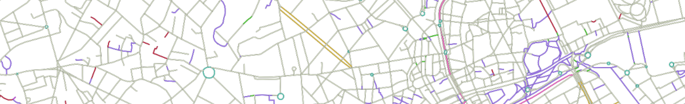
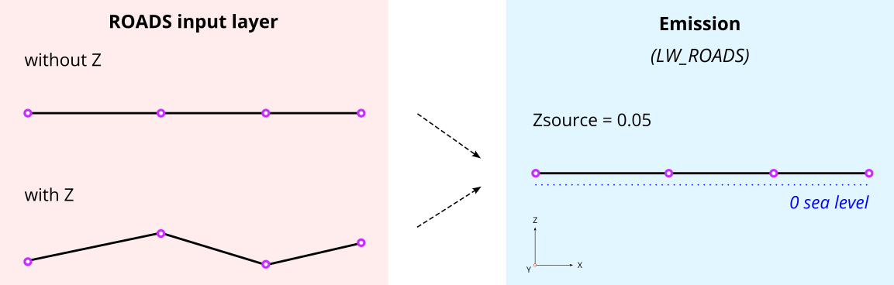
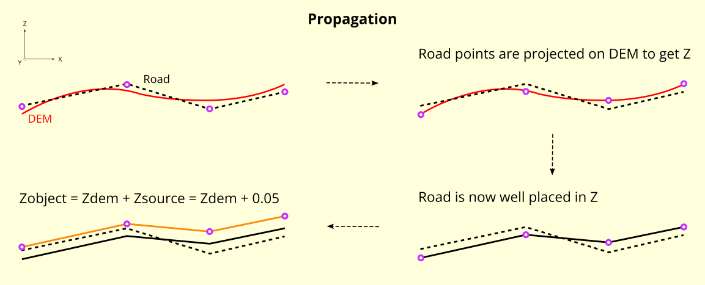

Roads
NoiseModelling is a tool for producing noise maps. To do so, at different stages of the process, the application needs input data, respecting a strict formalism.
Below we describe the table ROADS, dealing with the roads network.
The other tables are accessible via the left menu in the Input tables & parameters section.

Table definition
Warning
In the list below, the columns noted with
*are mandatoryThis description is only valid for
Noise_level_from_trafficandRoad_Emission_from_TrafficWPS scripts. For the other WPS scripts, it is necessary to refer to the description of their input data
Note
In the list below, some columns are suffixed with the letters D, E and N. This correspond to Day (6-18h), Evening (18-22h) and Night (22-6h) periods. A column is expected for each of them.
THE_GEOM*Description: Geometry of the roads (
LINESTRINGorMULTILINESTRING)Type: Geometry
PK*Description: An identifier (PRIMARY KEY)
Type: Integer
LV_D,LV_E,LV_NDescription: Hourly average light vehicle count
Type: Double
MV_D,MV_E,MV_NDescription: Hourly average medium heavy vehicles, delivery vans > 3.5 tons, buses, touring cars, etc. with two axles and twin tyre mounting on rear axle count
Type: Double
HGV_D,HGV_E,HGV_NDescription: Hourly average heavy duty vehicles, touring cars, buses, with three or more axles count
Type: Double
WAV_D,WAV_E,WAV_NDescription: Hourly average mopeds, tricycles or quads ≤ 50 cc count
Type: Double
WBV_D,WBV_E,WBV_NDescription: Hourly average motorcycles, tricycles or quads > 50 cc count
Type: Double
LV_SPD_D,LV_SPD_E,LV_SPD_NDescription: Hourly average light vehicle speed (km/h)
Type: Double
MV_SPD_D,MV_SPD_E,MV_SPD_NDescription: Hourly average medium heavy vehicles speed (km/h)
Type: Double
HGV_SPD_D,HGV_SPD_E,HGV_SPD_NDescription: Hourly average heavy duty vehicles speed (km/h)
Type: Double
WAV_SPD_D,WAV_SPD_E,WAV_SPD_NDescription: Hourly average mopeds, tricycles or quads ≤ 50 cc speed (km/h)
Type: Double
WBV_SPD_D,WBV_SPD_E,WBV_SPD_NDescription: Hourly average motorcycles, tricycles or quads > 50 cc speed (km/h)
Type: Double
PVMTDescription: CNOSSOS road pavement identifier (Default
DEF) (See NM possible values)Type: Varchar
TEMP_D,TEMP_E,TEMP_NDescription: Average Day, Evening and Night Celsius temperature (°C) (Default 20)
Type: Double
TS_STUDDescription: A limited period (
Ts) (in months) over the year where a average proportion (pm) of light vehicles are equipped with studded tyres [0-12]Type: Double
PM_STUDDescription: Average proportion of vehicles equipped with studded tyres during
TS_STUDperiod [0-1]Type: Double
JUNC_DISTDescription: Distance to the junction (in meters). When approaching less than 100m from a junction, it is advisable to subdivide the section into 10m pieces and calculate the distance from the centroid of this sub-section to the junction. This allows for a finer calculation.
Type: Double
JUNC_TYPE- Description: Integer defining the type of junction
0: None1: A crossing with traffic lights2: A roundabout
Type: Integer
SLOPEDescription: Slope (in %) of the road section. If the column is not filled in, the
LINESTRINGZ-values will be used to calculate the slope and the traffic direction (WAYcolumn) will be force to3(bi-directional)Type: Double
WAY- Description: Integer defining the way of the road section.
1= One way road section and the traffic goes in the same way that the slope definition you have used2= One way road section and the traffic goes in the opposite way that the slope definition you have used3= Bi-directional traffic flow, the flow is split into two components and correct half for uphill and half for downhill
Type: Integer
Geometry modelling
In NoiseModelling, road geometries are used as a medium for road noise emission and propagation.
Emission
According to CNOSSOS-EU, emissions from road traffic should be 5cm above the ground.
You can create your own emmission layer or use the dedicated NoiseModelling block called Road_Emission_from_Traffic.groovy. In this script, the table ROADS is used to create the emission table LW_ROADS. As a consequence, whether or not your roads have a Z value in ROADS, NoiseModelling forces a Zsource value of 5cm in LW_ROADS.

Warning
Whether you have Z values, the emission layer must be at an altitude of 5cm (above sea level) : Zsource = 0.05
Note
Z values in the input layer are only used to calculate the slope
Propagation
Whether you use your own sources or those calculated by NoiseModelling, the propagation step will consist of deducing the altitude from the DEM and adding the emission height (5cm).

Warning
Zobject=Zdem + Zsource=Zdem + 0.05If there is no DEM, the altitude will be equal to 5cm (
Zobject=0.05)If your
ROADStable has accurate Z values, you are invited to enrich your DEM with this information before doing the propagation step. See DEM section for more information.
Note
Z values in the input layer are only used to calculate the slope. They are not used to force the DEM
In this context, the roads geometry can be in 2D or in 3D. In both cases, Z information is not taken into account during emission or propagation steps.